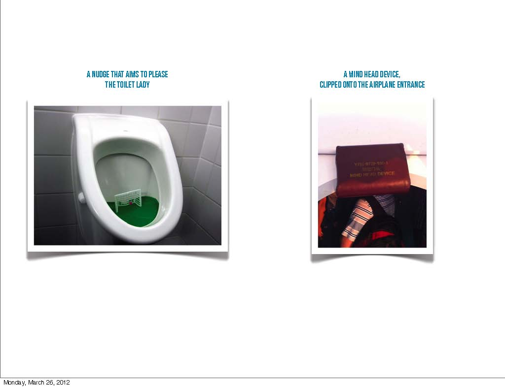

If we imagine a cone with four levels, and we take it to represent an undertaking for a client, these four levels: the undertaker, the strategist, concept developer, and at the bottom, the designer, represent is a classic design commission: we have a strategy, come up with a concept, and make a design. What you see is at the top there is the thinking and at the bottom there is the doing, at the top its about creating business and at the bottom about creating designs, and further, at the top its about storytelling and the bottom products and service systems. The interesting thing is that as you move up your outreach is bigger, but whats more important, because such tasks have greater independence, as a strategist, you move around and are forced to get out of your comfort zone. This is where I think the role of the designer has to move toward, to a medium independent creative thinker, instead of a doer. The new role for the designer: a thinker, a strategist, a conceptualist, a business creator, a philosopher.
Why the designer? Because of his or her creativity, from this perspective we are much more powerful than classical consultants, we can look at things from a more holistic point of view, we have the ability to challenge, the ability to connect the thinking and doing, we can act on all levels and make things fit, and we can bring together company concerns with user and consumer concerns, but only if the designer gets out of the comfort zone.
First, lets start with an anecdote.
"Keep the Change", a program which is designed on top of Bank of America's debit card. What this service does is, whenever you pay for a coffee, say, it rounds up the amount paid to a decimal, so if the coffee costs 3.20 it rounds the figure up to 4.00, with the additional 0.80 cents being transferred into a savings account in your name. Its quite shocking to see how quickly money can accumulate by saving in this way. So, it takes a basic human desire as a point of departure ... people all want to save, but they don't know how. Designers or banks can communicate as much they like but it doesn't make it any easier for savers. This particular design intervention got more then 100,000 people to switch to Bank of America, its designed for behavioural change, it triggers people to save without having to do anything.
The first conclusion we can make from this is that if you compare advertising with the science of behavioural economics, you see that advertising, as an industry, clings to a naive conviction that people will change their behaviour if they are informed, so all the advertiser need do is communicate with them.
Some examples to illustrate this point:
This is a brilliant intervention intended to prevent guys from missing the urinal, its a miniature goal with a small ball that can be aimed at, the use is obvious, but perhaps the purpose isn't.

Another example, which we discovered while on holiday, is a "Mind Your Head" type sign, it says "Mind Head Device", and it was clipped above the entrance of a airplane, quite a small airplane. Again, its not a communication thing, its putting the solution in place of the communication.
A year ago HIVOS, Humanistisch Instituut voor Ontwikkelingssamenwerking, did a campaign with the idea that people here in the Netherlands should reduce energy consumption, the campaign was dreadful, it says "He thanks you for not using your dry-cleaners", actually, the first iteration said, "He thanks you for not using your shower". This is really, really, bad advertising because people reacted negatively toward it, the thought is: "now its my fault that the third world having all kinds of problems ... because I shower too much?"
What if we somehow twist the choice architecture in which we all operate, could we trigger unconscious behaviour that results in fulfilling or intended goal, but without the direct act of instruction?
Students in Utrecht created a "light gun", a fun way to shoot out lights. If you shoot the gun at a light in your house it turns the light off, the gun is a one way switch so it couldn't be used to turn the lights on again, you would have to get up out of your chair, and walk to the switch, to turn the light back on. Its a fun way of approaching the same problem of energy use, but its designed to be transparent to the user.